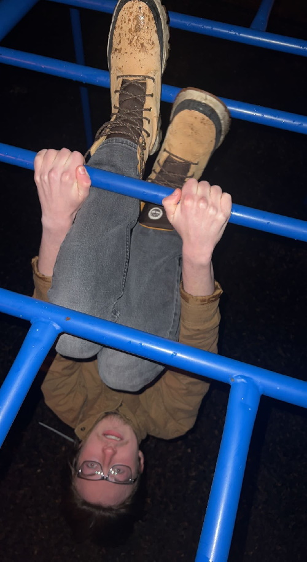
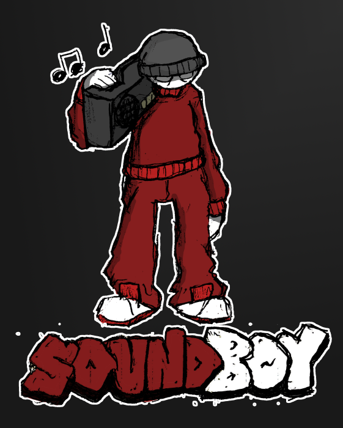
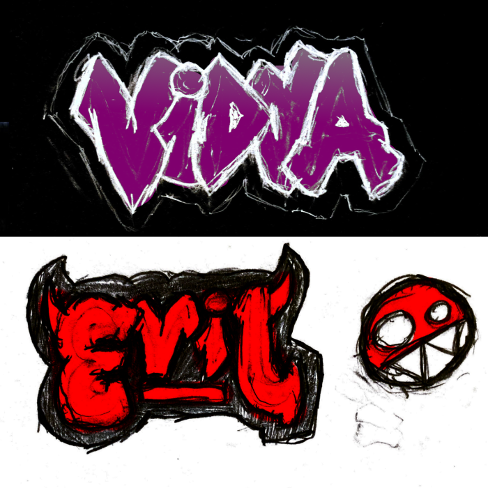
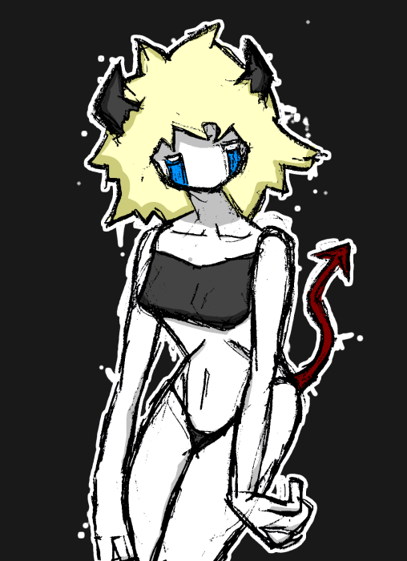
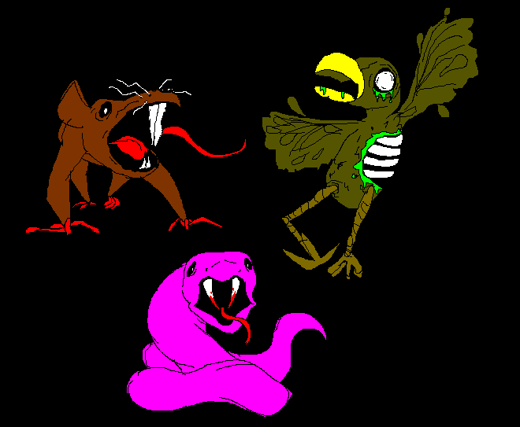

About
Hello! I am Nathan Hammer, and welcome to my webpage. Here, you can find the projects I have worked (or working) on and my resume. This website is still in development, so some features/elements may or may not work. The website is using Javascript, so make sure that is enabled-- or something. Regardless, welcome to nhammer.online! :)
Even when I was young, I found great interest in computers and the arts. I encountered many incredible creations made by random, Internet denizens. These creations have inspired me to create my own corner of the Internet, and publish my stuff for the world to see!
If you are curious how this website was programmed, you can check out the source code here.
Projects
Here, you can find all of the projects I have worked on, like illustrations, video games, essays, and more. Hopefully you find something to your interest!
Illustrations & DrawingsReflective Essay
Wordpress Website
Resume
EDUCATION
Penn State Erie, The Behrend college, Erie, PA.
Bachelor of Arts in Digital Media, Arts, and Technology
WORK EXPERIENCES
Burkhart Building Industries, Shaler, PA
- Gained the technical skills to handle construction tools and machinery.
- Learned how to communicate and cooperate with fellow colleagues to solve problems.
- Learned the meaning of hard work, and what it means to "go the extra mile".
GetGo Gas Station & WetGo Car Wash, Wexford, PA
- Learned how to deal with difficult customers and help them until they are satisfied.
- Learned how to perform a variety of tasks efficiently between different parts of the store.
Frankenstein Variorum Project
- Gained the knowledge to use Git systems and organize files/data for others to use.
- Learned how to adapt quickly to new/changing working environments.
- Gained the ability to notice small errors or discrepancies in large texts and fix them accordingly.
VOLUNTEER EXPERIENCES
Steel City Codes
- Learned how to explain abstract coding concepts like datatypes and conditional statements in a way that grade school children can understand.
- Had to help between several different children at once to solve their problems.
LEADERSHIP EXPERIENCES
Manager of gaming community
- Learned how to satisfy a large video game community that consists of 700+ users.
- Learned the necessary skills to manage a Virtual Private Server running Linux.
- Dealt with inappropriate staff members who caused negative experiences for other users.
RELEVANT SKILLS
Systems maintenance
- Unix systems, SQL, PHP, HTML/CSS, XML, JavaScript, Python, and LUA.
Digital media and design
- Photoshop, Premier Pro, Sony Vegas, oXygen
Illustrations and drawing
Illustrations & Drawings
Sound Boy (2023)

Graffiti concepts (2022)

Devil Girl (2022)

Sewer Monsters (2021)
Reflective Essay
Designing a website is a difficult task to accomplish. It requires the developer to think like a designer and learn the many facets of digital space. Understanding computer directories and coding languages like HTML or CSS is a lot to ask for, especially for beginners. Fortunately, Penn State offers a resource for students to build and publish a website easily using Wordpress. However, like all things with alternatives, there are tradeoffs. For what Wordpress makes up for in accessibility and user friendliness, it lacks in flexibility and overall potential.
With that being said, the most beneficial feature of Wordpress is the user interface. It may take some time to learn the workplace and understand all the tools available, but it is without a doubt easier to use than designing a website from scratch. Instead of manipulating a directory and modifying files to function with other files on a computer; Wordpress is on the browser, and it includes features that do all the work for you. To create a new page for your website, all you need to do is to hover over the “Pages” option on the side and press “Add New”. All of the essential elements for webpages can be added or removed the same way. When editing your new page, you will be prompted to Wordpress’ text editor. The text editor is relatively easy to use as its layout is reminiscent of Microsoft Word or Google Docs, though you cannot highlight/color anything. If you want to change the color of your text, you will have to visit the “Themes” option. There, you can further customize the aesthetic for your website, like its colors and style. You can pick one of the premade themes or make your own. Wordpress is a wonder in a way that it gives users power to create websites with the movement of a click, but its power is far from limitless. Wordpress’ accessibility makes it so that the average person can create a website with relative ease, but its easy-to-use functionality enforces limits on potential design.
The only “limitless” feature on Wordpress’ is the Custom CSS editor, where you can modify the Cascading Style Sheet (CSS) associated with your webpage. Even then, CSS only controls the visual appearance of your site, not the functionality or content. You cannot modify the HTML code, nor can you make a simple, blank page with a single image. You cannot use JavaScript, nor can you add elements that make your site look truly professional. It is nearly impossible to make your Wordpress website stand out. Once you realize the consistencies between websites using Wordpress, you will realize that they all share the same features. They are clunky, have a navbar, an archive, search bar, comments, and some annoying text at the bottom. In other words, when you are using Wordpress, you are expected to make a Wordpress website. From a professional perspective, Wordpress is anything but. Wordpress provides plenty of customization options for users to create their own websites, but its limitations are its downfall.
Back